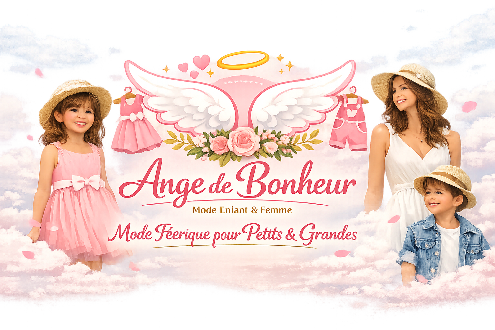

La Boutique Ange de Bonheur est née d’une passion profonde pour la mode et le style. Notre mission est de proposer des articles uniques pour filles, garçons et femmes modernes, alliant confort, élégance et personnalité.
Chaque pièce est soigneusement sélectionnée pour refléter l’esprit de notre marque : authenticité, créativité et raffinement. Nous croyons que la mode est plus qu’un vêtement : c’est une expression de soi et une source de confiance.
Que vous cherchiez une tenue chic pour une occasion spéciale ou un look décontracté au quotidien, nous mettons un point d’honneur à offrir des produits qui inspirent et valorisent chaque personnalité.